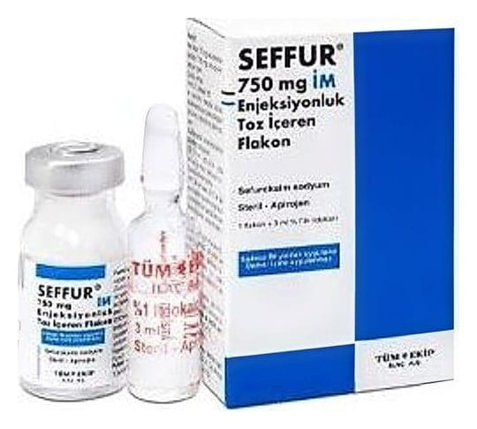

Seffur 750 mg IM Enjeksiyonluk Çözelti Hazırlamak İçin Toz Ve Çözücü, 1 Adet

Ne için kullanılır
KT · Bölüm 1SEFFUR, bakteriler üzerinde öldürücü etki gösteren sefalosporin grubu bir antibiyotiktir. Doktorunuz bu ilacı, sahip olduğunuz enfeksiyon nedeniyle, ameliyat öncesi veya sonrası enfeksiyonlardan korunmanız için size vermeye karar vermiştir.
SEFFUR, tedavi ve bakteriyel enfeksiyonlardan korunma amaçlı kullanılır. Doktorunuz size ve hastalığınıza uygun olarak bu ilacı seçmiştir. Duyarlı mikroorganizmaların sebep olduğu enfeksiyonların tedavisinde endikedir.
• Alt solunum yolu enfeksiyonları: Akut ve kronik bronşit (bronşların iltihabı), pnömoni (zatürre), akciğer absesi, ameliyat sonrası göğüs enfeksiyonları • İdrar yolu enfeksiyonları: Akut ve kronik piyelonefrit (uzun veya kısa süreli böbrek iltihabı), idrar kesesi iltihabı, asemptomatik bakteriüri (bulgu göstermeden bakterilerin çoğalması)
• Deri ve yumuşak doku enfeksiyonları: Selülit (deri altı dokuları etkileyen cilt iltihabı), erizipel (bir çeşit cilt iltihabı), karın zarı iltihabı, yara enfeksiyonları • Septisemi (bakterilerin kanda üreyerek çoğalması) • Menenjit (beyin zarlarının iltihabı) • Gonore (Bel soğukluğu) • Kemik ve eklem enfeksiyonları: kemik iltihabı, septik artrit (eklemin çeşitli mikroorganizmalarla gelişen iltihabi bir hastalığıdır) gibi hastalıkların tedavisinde kullanılır. • Profilaksi (koruma): Karın, kalça, ortopedik, kardiyak, akciğer, yemek borusu ve vasküler ameliyatlarda, enfeksiyon risk artışı olduğunda uygulanabilir.
Sefuroksim sodyuma karşı hassasiyet coğrafi bölgelere ve zamana göre değişkenlik gösterebilir.